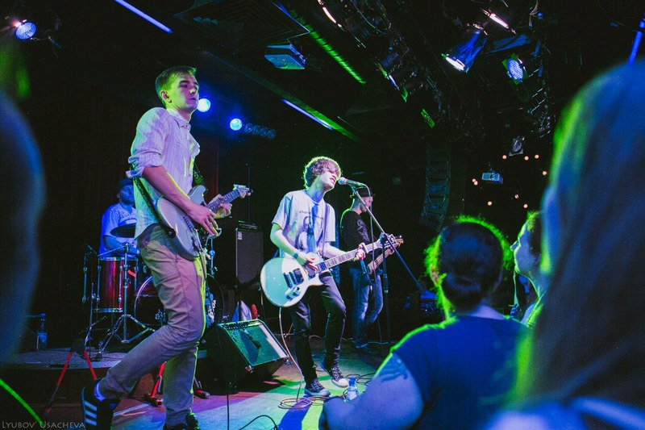

Orange House (Оранжевый дом) - российская рок-группа, существует с 2010 года.
Основные музыкальные направления - rock, pop-rock, alternative.
В названии колектива "House" является отсылкой к песне "Blind House" группы "Porcupine Tree" (намекая, что и у Orange House есть прогрессивные композиции), а "Orange" символизирует все светлое и искреннее, что есть в этой жизни. В целом, можно рассматривать его как аллюзию на то, что как бы не было тяжело,
всегда есть что-то светлое, и всегда есть смысл двигаться дальше.
Эта же идея является лейтмотивом многих песен.
